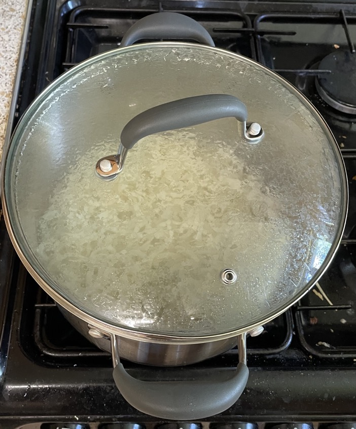
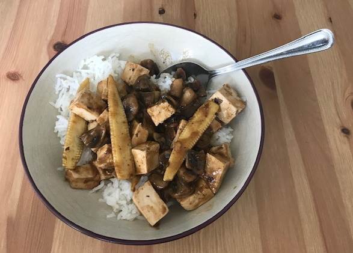

Stir fry
Cooking
- Hot wok cold oil then food
- Tempeh and baby corn together in sesame oil
- Pepper and sugar snap peas together in neutral oil
Meat
- Add baking soda to meat before marinade to alkalise and tenderise (p117 The Wok)
- Cut meat against grain at angle for more surface area for sauce
Meat / Soya
Veg
Green
- Broccoli
- Cabbage
- Cucumber - peeled, deseeded
- Fine beans
- Green pepper - finely chopped
- Kale
- Lettuce
- Mange tout
- Pak choi
- Sprouting broccoli - stalks finely chopped
- Sugar snap peas
Red / orange
- Carrots - finely chopped or ribbons from peeler
- Chilli sliced
- Peppers - finely chopped
Beige
- Baby corn - cut in half lengthways, saute in sesame oil
- Bamboo shoots
- Bean sprouts
- Chinese leaf
- Corn kernels
- Mushrooms
- Sweetcorn
- Tempeh
- Tofu
- Water chestnuts
Serving
- Can scatter with toasted sesame seeds
Sauces
Recipes
Good
- M&S Nasi Goreng
- Gressingham plum & hoisin sauce
- Sainsbury Kerala sauce
- Sharwoods sweet chilli
- Coop sweet chilli
- Blue dragon chilli garlic
- Sharwoods black bean
- Blue dragon black bean
Bad
Udon
- Must be boiled to cook properly so cover with boiling water in cooking pot
- Allow to soften in hot water before trying to separate noodles

Combinations
- Duck, marinaded tofu, sprouting broccoli, cucumber, plu, & hoisin sauce
- Beef medallions, teriyaki sauce, pepper, baby corn, udon noodles
- Stir fry mix, sweet chilli sauce, steamed cod, prawns, rice, duck bao buns
- Pan-fried cod, stir fry, udon noodles, teriyaki sauce
- Seared tuna, teriyaki sauce, sprouting broccoli, udon noodles
Prawns, tofu & black bean sauce
- Tofu in air fryer, then prawns
- Pepper & carrots for 5 mins then baby corn & mange tout added
Tofu & Keralan sauce
- 600g Sainsbury Sweet and crunchy stir fry mix
- serve 2:1 veg:noodles

Mange tout, baby corn, mushrooms, carrots, king prawns & black bean sauce

Tofu, mushrooms, baby corn & black bean sauce

Tofu, mushrooms, water chestnuts, red pepper & sweet chilli sauce